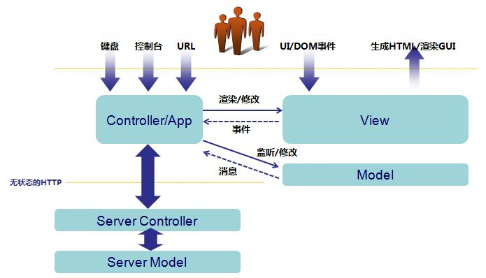
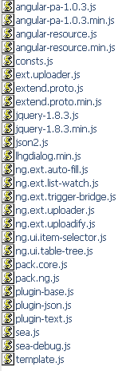

Seajs-Angular is a web front framework build with Angular/SeaJS/JQuery, it provides
Structure

files

includes
Module : ng/ng.config.js
configuration
Module : ng/ng.ui.js
directives
eg. datepicker/valid
<td>
<label>Begin Date:</label>
</td>
<td colspan="3">
<span class="input-append">
<input type="text" ng-model="query.handleTimeBegin"
ui-date="{dateFormat: 'yy-mm-dd 00:00'}"
ui-valid="r datetime" />
</span>
-
<span class="input-append">
<input type="text" ng-model="query.handleTimeEnd"
ui-date="{dateFormat: 'yy-mm-dd 23:59'}"
ui-valid-tips="Date range must be with in 7 days"
ui-valid="r datetime date:rangeout:query.handleTimeBegin:+0 date:range:query.handleTimeBegin:+7" />
</span>
</td>
eg. autocomplete/select2/shortkey
<input type="text" ng-model="query.deptLabel"
ui-autocomplete="{url: '/webx/controller/newcore/PocAction/getDeptValLabel.gy', targetModel: 'query.dept'}"
ui-valid="ac:query.dept" />
<select class="span3" multiple
ng-model="query.test"
ui-select2="{watch: 'optsTest'}"
ng-options="one.v as one.l for one in optsTest">
</select>
<button class="btn btn-primary" ng-click="queryLl()" ui-shortkey="{key: 'ctrl+shift+q', method: 'queryLl'}">查询</button>
eg. dialog/ztree
<div ui-dialog="" visible="{{queryDetailShow}}" title="TITLE" class="ng-cloak"
on-ok="queryDetailShow=false;dialogClose();" on-cancel="queryDetailShow=false;">
hello dialog hello dialog hello dialog hello dialog hello dialog hello dialog
<br />
hello dialog hello dialog hello dialog hello dialog hello dialog hello dialog
<br />
hello dialog hello dialog hello dialog hello dialog hello dialog hello dialog
</div>
<ul ui-ztree="{fn: 'treeNodeSelected'}" ng-model="testTreeDataList"></ul>
$scope.treeNodeSelected = function(treeId, treeNode){
uiLog.i(treeNode);
};
eg. delegateBind
<ul ui-delegate-bind="{tag: 'li', eventType: 'click', fn: 'choosedOne'}">
<li>A</li>
<li>B</li>
<li>C</li>
</ul>
<a href="tab1.html" title="TEST" ui-tab="{tabId: one.policyId}">{{one.policyId}}</a>
eg. ng-repeat each item change trigger
<tr ng-repeat="item in ll">
<td>
<select ng-model="item.col1" ui-valid="r"
ext-list-watch="{fn: 'changeChooseLl', targetProperty: 'item.chooseLl2'}"
ng-options="one.code as one.name for one in item.chooseLl1">
<option value="">--/--</option>
</select>
</td>
<td>
<select ng-model="item.col2" ui-valid="r"
ng-options="one.code as one.name for one in item.chooseLl2">
<option value="">--/--</option>
</select>
</td>
</tr>
$scope.changeChooseLl = function(val){
if(val){
return [{code: 'AAA', name: 'AAA'}];
}else{
return [{code: '2', name: '2'}];
}
};
var ll = [];
ll.push({col1: '', chooseLl1: [{code: '1', name: '1'}]});
ll.push({col1: '', chooseLl1: [{code: '11', name: '11'}]});
$scope.ll = ll;
progressbar、slider、contextmenu
<!-- progress bar -->
<div class="box" ng-model="progressVal" ui-progress-bar=""></div>
<div ng-model="sliderVal"
style="width: 500px; margin: auto;"
ui-slider="{min: 100, max: 999}">
</div>
<div ui-context-menu="{title: 'TEST context menu', fn: 'contextMenuClick'}" ng-model="contextMenuLl">
</div>
Module : ng/ng.service.js
Services
API
// do log
uiLog.log(msg, level)
@param {Object} msg
@param {String} level default is INFO
@return {Empty}
// level = DEBUG
uiLog.d(msg)
@param {Object} msg
@return {Empty}
// level = INFO
uiLog.i(msg)
@param {Object} msg
@return {Empty}
// level = WARN
uiLog.w(msg)
@param {Object} msg
@return {Empty}
// level = ERROR
uiLog.e(msg)
@param {Object} msg
@return {Empty}
// do log, log will send to server side
uiLog.audit(msg)
@param {Object} msg
@return {Empty}
// pagination
uiPager.gen(pager)
@param {Object} pager pagination data - eg. {pageNum: 10, pageSize: 10, totalCount: 100}，可以为空
@return {Object} return data that bind with html view - eg. {pageNum: 10, pageSize: 10, totalCount: 100, totalPage: 10, totalPageLl: [{pageNum: 1, btnClass: 'btn-large'}]}
// filter post data
uiRequest.filter(params, conf, skipLl)
@param {Object} params data to be send
@param {Object} conf options, eg. date format
@param {Array} skipLl properties should be skipped
@return {Object} data transfered
// flat data to key-value eg. {persions: [{name: 'John'}]} -> {'persions[0].name': 'John'}
uiRequest.pairs(obj, name)
@param {Object} obj json object
@param {String} name default is '', use for recurse
@return {Object}
// parse url query parameters
uiRequest.params(url)
@param {String} url url
@return {Object} query parameters
// show tips on a dom elements
uiTips.on(el, msg, conf)
@param {Object} el dom elements
@param {String} msg tips content
@param {Object} conf options
@return {Empty}
// hide tips
uiTips.off(el, conf)
@param {Object} el dom elements
@param {Object} conf options
@return {Empty}
// use blockUI
uiTips.loading(fn, msg, opacity)
@param {Function} fn function that when blockUI show
@param {String} msg content
@param {Number} opacity
@return {Empty}
// close blockUI
uiTips.unloading(delay)
@param {Number} delay delay in ms
@return {Empty}
uiTips.loadingFn(fn, msg, opacity, delay, syc)
@param {Function} fn fn function that when blockUI show
@param {String} msg content
@param {Number} opacity
@param {Number} delay delay in ms
@param {Boolean} syc is synchronize ? if true，close blockUI after fn execution
@return {Empty}
// valid a form
uiValid.checkForm($form, $scope)
@param {Object} $form controller form object
@param {Object} $scope controller's scope
@return {Boolean}
// valid by rules
uiValid.check(val, rules, $scope, tips)
@param {Object} val target value
@param {String} rules rules split by space
@param {Object} $scope controller's scope
@param {String} tips tips that shows when error
@return {Boolean}
// add new valid rule
uiValid.regPat(code, pat, msg)
@param {String} code rule code
@param {String} pat rule regexp or function
@param {String} msg tips that shows when error
@return {Empty}